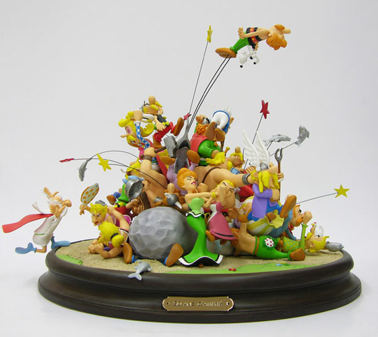

<main>
    <div class="home">
        <section class="presentation">
            <h1>Bienvenue Gaulois et Gauloises ! </h1>
            <h2>Découvrez ci-dessous notre gamme de figurines réalisées et paintes à la main</h2>
            
            <p>Créer en 2004, la boutique Au Petit Village vous propose des statuettes de qualité, 100% artisanales et made in France,
                idéal pour les collectionneurs et les décorateurs, mais qui saura aussi faire le bonheur des plus jeunes
            </p>
        </section>
        <section class="produits">
            <h1>Nos figurines</h1>
            <div class="product">
                <select name="option" >
                    <option value="croissant">Trier par prix croissant</option>
                </select>
                <article *ngFor="let product of ( products | sortByPrice);">
                    <h2>{{product.name}}</h2>
                    
                    <p>Description: {{product.description}}</p>
                    <p>Prix: {{product.price | currency:'EUR'}}</p>
                </article>
            </div>
        </section>
    </div>

</main>
